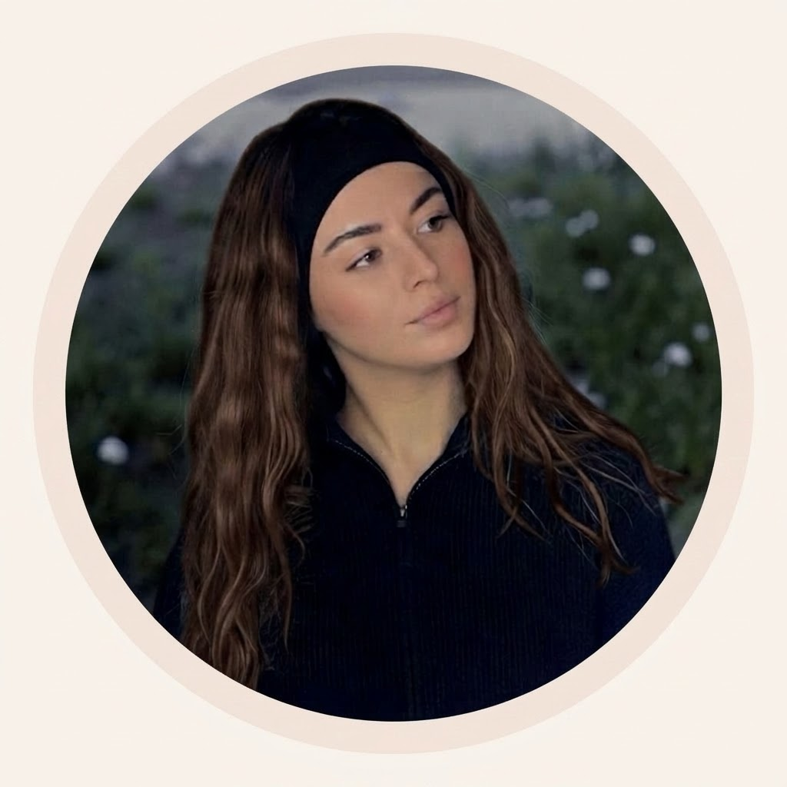

Naturopathie fonctionnelle
On cherche ensemble ce qui bloque vraiment.
Appel de 15 min offert · 100 % en ligne · Facture pour ta mutuelle

Mes spécialités
Je t'accompagne sur les déséquilibres hormonaux et leurs répercussions, en comprenant ce qui se passe dans ton corps, ton mode de vie et ton histoire.
Cycles irréguliers, absents ou très longs, règles douloureuses ou abondantes, cycle déréglé depuis l'arrêt de la pilule.
Irritabilité, anxiété, fatigue, maux de tête, gonflements, envies de sucre : le syndrome prémenstruel n'a pas à rythmer ton mois.
Syndrome métabolique des ovaires polykystiques : résistance à l'insuline, ovulation, cycles, hyperandrogénie, fatigue.
Accompagnement du terrain inflammatoire et hormonal pour mieux vivre la douleur et les symptômes, en complément de ton suivi médical.
Fatigue, chute de cheveux, frilosité, prise de poids, Hashimoto : on regarde ce qui peut soutenir ta thyroïde, en complément de ton suivi médical.
Boutons autour du menton, de la mâchoire, poussées avant les règles ou acné qui persiste à l'âge adulte.
Optimisation de la fertilité en couple, préparation avant ou pendant un parcours PMA, en lien avec ton équipe médicale.
Premières règles, règles douloureuses, cycles qui ne se mettent pas en place, acné : un accompagnement adapté aux adolescentes.
Mon accompagnement est complémentaire au suivi médical. Je ne pose pas de diagnostic et ne prescris pas de traitement.
C'est pour toi si
Tes bilans sont « normaux », ton médecin te dit que tout va bien, mais toi tu sais que quelque chose ne va pas.
Fertilité & PMA
La fertilité est une affaire de couple. Je t'accompagne, toi et ton partenaire, pour optimiser votre terrain avant ou pendant un parcours médical.
Qualité de l'ovulation, régularité du cycle, SMOP (SOPK), endométriose, thyroïde, résistance à l'insuline, inflammation et micronutrition.
Compréhension du spermogramme, vitalité masculine, hygiène de vie et micronutrition pour soutenir la qualité des spermatozoïdes.
Optimiser votre terrain avant ou pendant une PMA, en complément du suivi de votre équipe médicale et sans jamais s'y substituer.
L'accompagnement fertilité est une version de l'accompagnement 3 mois, avec une anamnèse complète pour chacun. Il ne garantit pas une grossesse, il vise à optimiser vos chances.
Qui suis-je
Pendant longtemps, j'ai cru que mon corps était quelque chose à corriger, à faire taire, à contrôler.
Tout a commencé tôt : une acné très marquée, des cycles irréguliers et fatigants. Je voulais aller mieux, alors je suis passée de solution en solution, souvent rapides, surtout pour faire taire les symptômes. Sans jamais comprendre le fond.
Puis le travail s'est ajouté à l'équation. Petit à petit, mon corps a lâché : fatigue profonde, système nerveux en alerte, douleurs qui m'ont empêchée de continuer le métier dans lequel j'avais mis toute mon âme.
Le déclic, ça a été de comprendre que tout était lié. Mes hormones, mon énergie, mon stress, mon travail, mes relations faisaient partie d'un même terrain. Le corps ne demande pas qu'on le répare, il demande qu'on le comprenne.
Aujourd'hui, je ne suis plus en lutte contre mon corps. Je sais l'écouter avant qu'il ne crie.
Mon objectif : aider les femmes sensibles, fatiguées, en déséquilibre hormonal ou en surcharge nerveuse à comprendre leur corps, retrouver de l'énergie et se sécuriser intérieurement. Avec une approche fonctionnelle, douce, incarnée. Pas de solutions miracles, pas d'injonctions : juste des bases solides pour celles qui sentent que leur corps mérite mieux que d'être forcé.
Mes formations
Naturopathie fonctionnelle
Micronutrition et système hormonal
Fertilité
Ce que ça change
Les retours de mes consultantes, issus de mes avis Google.
A.T.
1 mois d'accompagnement
Elle avait des crises d'angoisse presque tous les soirs. Elle en était à un stade où c'était soit l'accompagnement fonctionnait, soit elle serait sous traitement médicamenteux. Elle a voulu essayer autre chose avant cette ultime étape.
A.J.
3 mois d'accompagnement
SPM invalidant, anxiété, maux de tête fréquents, peau réactive, digestion perturbée. Des symptômes sur lesquels elle avait l'impression que rien ne fonctionnait.
A.S.
3 mois d'accompagnement
Épuisée, à bout de souffle, sensation burn-out. Les analyses étaient normales selon son généraliste. Thyroïde et vitamines à investiguer.
L.A.
Bilan initial
6 mois après accouchement avec perte de poids qui stagne, stress et fatigue ++. N'avait pas l'impression de pouvoir récupérer même après avoir bien dormi.
Témoignages recueillis sur ma page Google. Voir tous mes avis. Les résultats varient d'une personne à l'autre et ne remplacent pas un suivi médical.
Les accompagnements
Bilan initial (69€) + 3 rendez-vous de suivi (120€) = 189€ à la carte. L'accompagnement 3 mois (297€) y ajoute la messagerie directe, le suivi hebdomadaire et tes bonus.
Tu remplis ton anamnèse sur ma plateforme : symptômes, histoire, habitudes, bilans, tout au même endroit. Pour beaucoup de femmes, c'est la première fois que quelqu'un demande vraiment tout ça.
Ce n'est pas une séance de découverte : j'ai analysé ton dossier en amont. On va directement à l'essentiel, je t'explique ce qui se passe probablement dans ton corps, pourquoi tes symptômes sont liés et comment on va travailler.
Tu reçois un protocole construit pour toi : alimentation, compléments adaptés à ton terrain, posologie, durée, liens directs pour commander. Tu n'as pas à chercher, tout est là.
Chaque semaine tu notes ton évolution sur la plateforme, chaque mois on fait le point et on ajuste. Tu as une messagerie directe : si tu as une question, tu l'envoies, je réponds.
Tu n'es jamais seule face à ton protocole.
L'e-book « Le petit-déjeuner qui stabilise tes hormones » pour bien démarrer tes journées, et l'e-book « Les recettes de ton cycle », avec des recettes gourmandes adaptées à chaque phase.
À la fin de ton accompagnement, tu reçois une facture pour ta demande de remboursement auprès de ta mutuelle. C'est aussi le cas pour le bilan initial et chaque rendez-vous de suivi.
Questions fréquentes
La naturopathie n'est pas remboursée par la Sécurité sociale. Certaines mutuelles prennent en charge une partie des séances : renseigne-toi auprès de la tienne. Je te remets une facture pour chaque prestation, pour ta demande de remboursement.
Non. Mon accompagnement est complémentaire au suivi médical, jamais en remplacement. Je ne pose pas de diagnostic et je ne prescris pas de traitement.
Pas forcément. On peut travailler avec ce que tu as. Si des bilans me semblent utiles, je t'indique quoi demander à ton médecin.
On ajuste. C'est précisément pour ça que ton protocole évolue chaque mois : on ne reste jamais sur quelque chose qui ne fonctionne pas.
Le règlement se fait en ligne, de façon sécurisée via Stripe, au moment de la réservation. L'accompagnement 3 mois peut se payer en une fois (297€) ou en 3 fois (3 × 99€).
Une autre question ? Toutes les questions fréquentes, ou écris-moi à lamenaturo@gmail.com.
Le parcours
Tu choisis ton créneau et tu règles en ligne de façon sécurisée au moment de la réservation.
Tu accèdes à la plateforme et tu remplis ton anamnèse complète au moins 72h avant notre première séance.
J'étudie ton dossier en profondeur avant qu'on se retrouve. On arrive directement à l'essentiel.
Protocole sur mesure, suivi régulier, ajustements continus. Tu n'es jamais seule dans le processus.
Commence par un appel découverte gratuit, ou réserve directement ton bilan initial ou ton accompagnement. Le paiement se fait en ligne, de façon sécurisée, à la réservation.
Un doute ? Écris-moi à lamenaturo@gmail.com ou envoie-moi un message sur Instagram @meije.naturo.